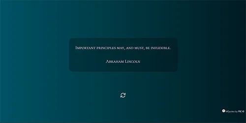

Es la página personal, la cual se encuentra actualmente y uso para mi presentación.
Página con diseño responsivo-adaptable completamente personalizada con cambio de lenguaje y modo
claro/oscuro para una mejor experiencia de usuario.
Características:
- Web Responsive (adaptable).
- Español / Inglés.
- Modo Claro / Oscuro.
- HTML5, CSS3, JS.
- FontAwesome, Google Fonts.
Arquitech es una página ficticia que simula ser un estudio arquitectónico de diseño y creación de edificaciones.
Esta página posee modo claro/oscuro, presentación, proyectos, redes, formulario de contacto y ubicación (API Google Maps).
Características:
- Single-page application (SPA) - AJAX.
- Web Responsive (adaptable).
- Modo Claro / Oscuro.
- HTML5, CSS3, JS, Bootstrap.
- Bootstrap Icons, Google Fonts.

MQuotes es una página web que muestra frases motivacionales dichas por personas famosas. Consume la API de type-fit mediante Fetch y JSON.
Características:
- Trabaja con la API de type-fit.
- Web Responsive (adaptable).
- HTML5, CSS3, JS.
- Google Fonts.
Le Gout es un restaurant ficticio de comida francesa hecho con Bootstrap.
Posee un diseño minimalista, responsivo y atractivo a la vista, cuenta con un mapa de ubicación (utilizando la API de Google Maps).
Características:
- Web Responsive (adaptable).
- HTML5, CSS3, JS, Bootstrap.
- SimpleLightbox, Bootstrap Icons.